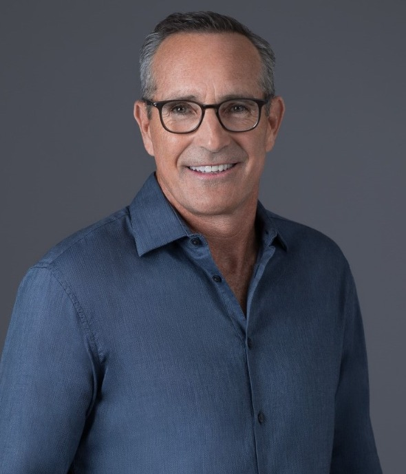

The program
Built from the classroom out.
USC Search Fund starts where every credible search ecosystem starts: a serious course, taught by practitioners, that treats entrepreneurship through acquisition as a discipline rather than a curiosity.
The course
BAEP-560
Search Funds & Entrepreneurship Through Acquisition
A graduate elective at the Lloyd Greif Center for Entrepreneurial Studies covering the full lifecycle of a search — from evaluating search as a career path through raising capital, sourcing, diligence, acquisition, transition into leadership, value creation, and exit.
The course is designed to answer two questions at once: how does ETA actually work, and is it the right first move for you? Those are different questions, and most curricula only take the first one seriously.
- Term
- Fall 2026 · Mondays, 6:30–9:30 p.m. · JKP 110
- Instructors
- Dustin Sellers and Chris Lueck — both operators, not lecturers
- Format
- Case-based sessions, practitioner guests, and live field exercises
The arc
From analysis to action.
The semester deliberately moves students out of the case packet and into the market. By the midpoint, the work is no longer theoretical.
Foundations
What ETA and search funds are, what a real search looks like told through the instructors’ own deals, how to evaluate an industry, and what makes a business worth acquiring in the first place.
The Sourcing Sprint
Students build a live deal pipeline across at least three sourcing channels — brokers and M&A advisors, the IBBA directory, Axial, industry associations, the Trojan network — and complete real conversations with owners, brokers, lenders, and working searchers. Reaching out to strangers is the skill; the assignment forces it.
Deal mechanics
Diligence, quality of earnings, valuation and deal structure, SBA and conventional debt, LOIs, and the negotiation dynamics unique to buying a company from the person who founded it.
The first 100 days
Transition, leadership under inherited culture, the operating cadence of a newly acquired company, value creation, and the eventual exit.
Sequencing is indicative and adjusts each term.
Leadership
Taught by people who have bought, run, and sold companies.

Dustin Sellers is an Adjunct Professor of Entrepreneurship at USC Marshall and General Partner at NCL Partners, a multi-time operator and, at present, a multi-fund institutional PE investor dedicated to backing top searchers across the country and globe. He has been investing in lower-middle-market businesses through the search fund model for close to 20 years, having backed over 100 searchers to date. Previously, using the search fund model, he acquired and led ProService, an HR outsourcing company, from $13 million to more than $350 million in revenue, ultimately generating a 22x return for investors and close to a 150% IRR.
LinkedIn — Dustin SellersChris Lueck is an Adjunct Professor of Entrepreneurship at USC Marshall and CEO of GovSoft Holdings, a holding company of government software businesses. A two-time searcher, he previously acquired and grew FastSpring from $8 million to more than $30 million in ARR before its acquisition by Accel-KKR, and later co-founded Alamar Partners to acquire additional software businesses.
LinkedIn — Chris LueckThe vision
A course today. An ecosystem next. A fund after that.
Every school with a real search presence followed the same sequence. A class creates informed students. Informed students become searchers. Searchers create alumni who invest in the next searchers. The capital arrives last, because it has to.
USC Search Fund is explicit about that path. Near term, the work is the course, the speaker series, and a connected community of Trojans active in ETA. Medium term, it is a searcher-in-residence structure and formal mentorship between graduates and current students. Long term, it is a USC-affiliated vehicle that backs Trojan searchers with capital and conviction.
We are early and we say so. That is the honest position, and it is the interesting one.
Our home
The Lloyd Greif Center for Entrepreneurial Studies
Founded in 1971, the Greif Center is one of the oldest entrepreneurship programs in the country and has been consistently ranked among the top programs in the United States. USC Search Fund sits within it, alongside the Center’s venture, family business, and founder-focused programming.